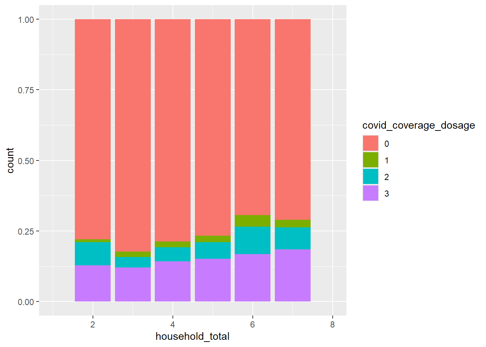
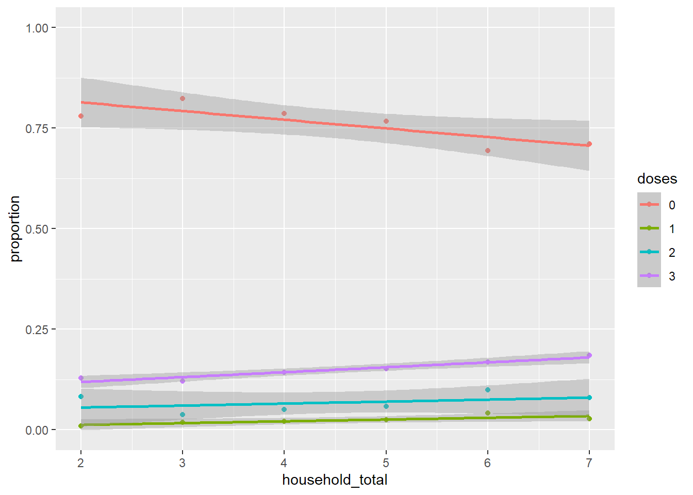
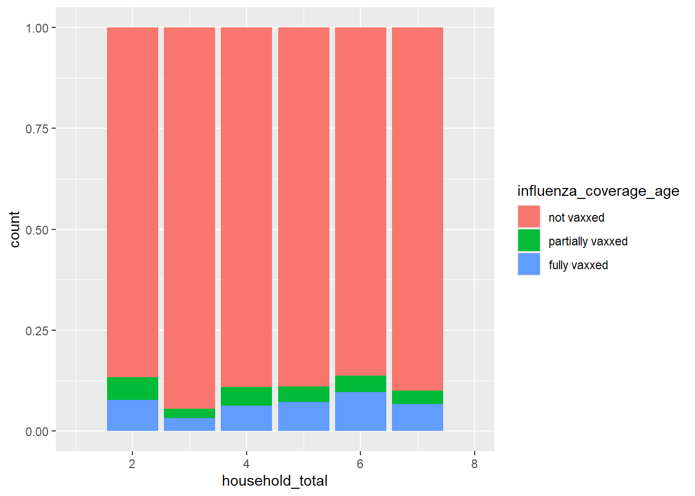

04_Exploratory_Data_Analysis
Load Packages
These are the packages that have been used throughout the following document: here, tidyverse, lubridate, knitr
other packages will be loaded as needed
Reading data
Creating data frames for bivariate and multivariate analysis
Influenza data
Distribution of coverage by number of doses and the degree of coverage (since october 2022)
By degree of coverage
By number of doses
influenza_coverage_dosage individuals proportion
1 0 3684 0.67497252
2 1 408 0.07475266
3 2 1366 0.25027483A majority of the children (68%) who are eligible for the influenza vax have not receieved the vaccine at all (i.e. 0 doses or Not vaxxed). However, within the children who have receieved at least one dose of the vaccine (~32%), a much greater proportion of them are considered fully vaxxed than being partially vaxxed (a ratio of 10:1).
This is supported by data on the number of doses received, the ratio of individuals who have received 2 doses as compared to 1 dose is roughly 3:1 (25:7.5). The discrepnacy in ratios can be explained by children below the age of 5 being considered fully vaxxed individuals upon receiving 1 or more doses of the influenza vax
Covid data
Distribution of coverage by number of doses and the degree of coverage (since october 2022)
By degree of coverage
covid_coverage_age individuals proportion
1 Not vaxxed 4338 0.8273889
2 Partially vaxxed 305 0.0581728
3 Fully vaxxed 600 0.1144383By number of doses
covid_coverage_dosage individuals proportion
1 0 4338 0.79479663
2 1 113 0.02070355
3 2 265 0.04855258
4 3 742 0.13594723Majority of individuals who exist in
The data on covid vaccinations tells a similar story to that of influenza vaccinations. Namely, the proportion of eligible children who are not vaxxed at all remains high at 80% of the children body. However, the proportion of individuals who are partially vaccinated – less than 3 doses for individuals over the age of 5 – is significantly higher (partial:full = 1:3) than that for those who received the influenza vaccine (partial:full = 1:10).
Referencing the number of doses of the covid vaccine received by individuals, we note that 13.6% of the eligible children received 3 doses of the covid vaccine, 1.3% lower than the 14.9% of children who are fully vaxxed – this is explained by children under 5y/o being classified as fully vaccinated as long as they have 1 or more doses of the covid vaccine due to variances in the vaccination schedule of covid vacccines for that age group. Note that majority (85%) of the 5.6% children who are partially vaccinated received 2 doses, 4.8% of all eligible children.
Why are there more children who are partially vaccinated for covid as opposed to the influenza vaccination?
Multivariate analysis
Independent variables
Package used: GGally for pairs plots?
Bivariate analysis
Independent variables
Questions to be asked
Number of individuals
Total number of individuals
The following is a breakdown of the number of households according to number of individuals per household
| individuals | 1 | 2 | 3 | 4 | 5 | 6 | 7 | 8 | 9 | 10 | 11 | 12 | 15 | 21 | 25 |
| households | 7995 | 10901 | 7149 | 5003 | 1429 | 381 | 97 | 31 | 5 | 3 | 1 | 1 | 1 | 1 | 2 |
| households_w_COI | 0 | 109 | 2244 | 2378 | 673 | 174 | 39 | 11 | 4 | 1 | 1 | 0 | 0 | 0 | 2 |
| percentage_w_COI | 0 | 1 | 31 | 48 | 47 | 46 | 40 | 35 | 80 | 33 | 100 | 0 | 0 | 0 | 100 |
Where the bars represent the number of household for each household size and the line graph represents the number of households with a child of interest for each household size
Responses from households of 3 to 5 people posses the majority of children of interest. Households comprise of 2 individuals had very little responses with a child of interest which could be attributed to there being less single-child parents.
To examine how the number of individuals in a household affects the children of interest then, we should primarily be looking at households of at least 2 individuals (children of interest = 109), and up to 7 people (children of interest = 39).
Does the number of individuals in a household affect
Breakdown of the number of households by household size – for those with covid vaccination data
# A tibble: 11 × 2
household_total count
<int> <int>
1 2 107
2 3 1957
3 4 2285
4 5 666
5 6 172
6 7 38
7 8 11
8 9 3
9 10 1
10 11 1
11 25 21. The child’s covid vaccination status

For household sizes of 2 to 7 individuals, we see a positive linear relationship between household size and being fully vaccinated. The apparent continuation of this trend with households of size 9 is deceptive as it is due to the small sample size of households of 9 individuals (n = 3)
2. The number of doses of the covid vaccine the child receives
*Following data on the degree of covid coverage by total household size, we limit the range of household sizes to household sizes of sufficiently large (n >= 30) counts.

Using simple linear regression to test the effect of an increasing number of household members on the proportions of individuals receiving 0 to 3 doses of the covid vaccine respectively.

There is a positive linear relationship between total household size and the number of individuals receiving 1 & 3 doses of the covid vaccine.
This is accounted for by the negative linear relationship between total household size and the number of individuals receiving 0 doses of the covid vaccine – indicating that more invidiuals who were previously unvaccinated were getting vaccinated.
However, there was no significant relationship between total household size and the proportion of individuals who received 2 doses of the covid vaccine.
3.the child’s (influenza) vaccination status Breakdown of the number of households by household size – for those with influenza vaccination data
# A tibble: 11 × 2
household_total count
<int> <int>
1 2 90
2 3 1533
3 4 1716
4 5 524
5 6 145
6 7 30
7 8 7
8 9 3
9 10 1
10 11 1
11 25 2
We limit the range of observations to households of sizes from 2 to 7 people such that the sample for each household size is sufficiently large (n >= 30).
Whilst it may appear that the proportion of individuals who get fully vaccinated increases with an increasing household size, this does not hold true once we limit the range of observations to households of sizes from 2 to 7 people such that the sample for each household size is sufficiently large (n >= 30).
The proportion of children of interest becoming fully vaccinated with the influenza vaccine fluctuates with the total number of individuals in a household. This deviates from the trend, where the proportion of individuals becoming fully vaccinated increased as the total number of individuals in a household increased, shown with the covid vaccine.
- the number of doses of the influenza vaccine the child receives*Following data on the degree of influenza coverage by total household size, we limit the range of household sizes to household sizes of sufficiently large (n >= 30) counts.
Using simple linear regression to test the effect of an increasing number of household members on the proportions of individuals receiving 0 to 3 doses of the covid vaccine respectively.
The total number of individuals in a household is not indicative of the proportion of individuals who receive 0 doses of the influenza vaccine.
The proportion of individuals receiving 1 vaccine decreased with an increasing number of individuals in a household whilst The proportion of individuals receiving 2 doses of the influenza vacine increased with an increasing number of individuals in the household.
Number of aunts and uncles
Does the number of aunts and uncles a child has affect: The following is a breakdown of the number of households with respect to the number of aunts and uncles that the child of interest has – for those with a valid covid vaccination status
child_auntcles count
1 0 5209
2 1 25
3 2 7
4 3 21. The child’s (covid) vaccination status
Due to the small sample of households where there are both children of interest with valid covid vaccination data and aunts or uncles living with them, let us recatogrise such data to determine if having an aunt or uncle living with a child impacts their chances of receiving the covid vaccine at all
# A tibble: 4 × 3
# Groups: auntcles [2]
auntcles covid_coverage count
<chr> <chr> <int>
1 No No 4309
2 No Yes 900
3 Yes No 29
4 Yes Yes 5re-categorising the data, we get the following contingency table
Pearson's Chi-squared test with Yates' continuity correction
data: chisq_auntcles_cov
X-squared = 0.02819, df = 1, p-value = 0.8667Since the p-value (0.8667) is not less than 0.05, we fail to reject the null hypothesis. Thus Covid vaccination uptake of a child is independent of the presence of aunts and uncles in the household.
2. The number of doses of the covid vaccine the child receives Refer to data on the degree of coverage for the covid vaccine with respect to the presence of aunts and uncles
3. The child’s (influenza) vaccination status The following is a breakdown of the number of households with respect to the number of aunts and uncles the child of interest has – for those with a valid influenza vaccination status
child_auntcles count
1 0 4027
2 1 18
3 2 5
4 3 2For all cases where children had aunts/uncles living with them, the children of interest were not vaccinated with the influenza vaccine.
To carry out a chi-squared test:
# A tibble: 3 × 3
# Groups: auntcles [2]
auntcles influenza_coverage count
<chr> <chr> <int>
1 No No 3659
2 No Yes 368
3 Yes No 25re-categorising the data, we get the following contingency table
Pearson's Chi-squared test with Yates' continuity correction
data: chisq_auntcles_cov
X-squared = 0.02819, df = 1, p-value = 0.8667As the p-value (p = 0.2164) is not smaller than 0.05, we cannot reject the null. Thus, the uptake of the influenza vaccine by a child is independent of the presence of aunts or ucles living in the same household.
4. The number of doses of the influenza vaccine the child receives Refer to data on the degree of coverage for the influenza vaccine with respect to the presence of aunts and uncles.
Number of vulnerable individuals
Does the number of vulnerable individuals living in the same household (this includes individuals who are bedriden, need ventilation and need feeding) affect:
The uptake of the covid vaccine?
# A tibble: 4 × 2
vulnerable_individuals count
<int> <int>
1 0 5421
2 1 25
3 2 3
4 3 9plotting the uptake of the covid vaccine by dosage against the number of vulnerable individuals in a household:
Given the small number of households who have 1 or more vulnerable individuals living with them, let’s reframe this variable to investigate the effect of the presence of vulnerable individuals on the number of doses of the covid vaccine the individuals receives.
vulnerable_individuals covid_coverage count
1 0 No 4313
2 0 yes 1108
3 1 No 17
4 3 yes 3
5 3 No 6
6 1 yes 8
7 2 yes 1
8 2 No 2Number of grandparents
Does the number of grandparents living in the same household affect: 1. The number of doses of the covid vaccine the child receives The following is a breakdown of the households by the number of grandparents per household
Child and siblings
Total number of siblings
- Does the number of siblings living with the child in the same household affect:
Number of brothers and/or siblings
- Does the number of sisters and or brothers living in the same household as the child affect:
Number of siblings at the time of vaccination
Parents
Number of parents
Does the number of parents a child has affect:
the child’s (covid) vaccination status
the number of doses of the covid vaccine the child receives
the child’s (influenza) vaccination status
the number of doses of the influenza vaccine the child receive
Parent’s marital status
- Does the marital status of the parents affect:
Finances
Annual household income
- Does the family’s annual household income affect:
Chronic illness
Respondent’s chronic illness
- Does the presence of chronic illness in the responding parent affect:
Industry of work
Respondent parent working in healthcare
- Does the respondent parent working in the healthcare sector affect:
Parent’s highest educational attianment
Parent’s highest education by qualification
- Does the highest educational qualification of a child’s parents affect:
Child’s parent’s vaccination
Parent’s influenza vaccination
- Does the influenza vaccination status of a child’s parents in the past year affect:
Parent’s covid vaccination (dosage)
- Does the covid vaccination status of a child’s parents affect:
Recency of parent’s covid vaccination
- Does the recency of a child’s parent’s covid vaccination affect:
Child’s parent’s yearly vaccination intention
- Does the child’s parent’s intention to get the covid vaccine every year affect: